play-be · 1080×1920 · варыянт A (каталог)
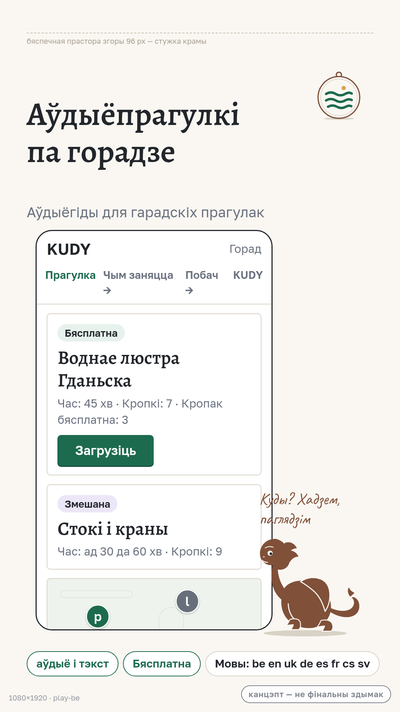
Чатыры перавыкарыстоўныя шаблоны з адзінай крыніцы: кампазіцыя скрыншотаў крам, вэб-блок уводзін, сацыяльная картка і картка-запрашэнне з QR. Беларускія і англійскія прыклады, правілы пашырэння тэксту, правы і крыніцы выяў, адкладзены спіс. Усё — канцэпты для праектавання, не фінальныя здымкі і не production-асеты.
a11ea86) · рашэнні B01–B10 + B03.1/B04.1–B04.3 · канон G06.07 (visual-language.md) · слоўнік G25.02 (cc2b581) · пазы дракона G25.03 (b79bfda) · прадметы G25.05 (86b3866) · іконкі G24.02 (#693). Редакцыі кантрактаў — на HEAD галіны zcode/707 (база e2ff047).| Платформа / носьбіт | Патрабаванне | Крыніца |
|---|---|---|
| Google Play · тэлефонныя скрыншоты | 9:16 (тут 1080×1920); кожны бок 320–3840 px; JPEG або 24-біт PNG без альфы; ≤ 8 МБ; 2–8 здымкаў | support.google.com/googleplay/android-developer/answer/9866151 |
| Google Play · feature graphic | 1024×500, JPEG/PNG без альфы | там жа |
| App Store · вядучы набор | 6.9″ партрэт 1320×2868; PNG/JPEG без празрыстасці; маштабуецца на меншыя класы дысплеяў | developer.apple.com/help/app-store-connect/reference/screenshot-specifications |
| Сацыяльныя прэв'ю (og:image) | 1200×630 (1.91:1); PNG/JPG ≤ 2 МБ; меты og:image:width/height; X summary_large_image малюе 1200×675 — крытычнае ў бяспечнай зоне 1080×510 | ogp.me; дакументацыя X Card |
| QR на друкаванай картцы | цішынная зона ≥ 4 модулі з кожнага боку (ISO/IEC 18004); для скану з рукі ≥ 25×25 мм — тут 28×28 мм; код закадаваны толькі ад жывога siteOrigin | ISO/IEC 18004; кантракт web/lib/qr.ts |
Каманды перагенеравання PNG — у README тэчкі. Памеры канваў зашытыя ў шаблонах як фіксаваныя width/height — экспарт робіцца здымкам канва, не масабойным перакадаваннем.

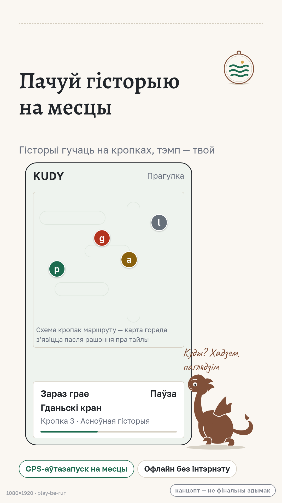
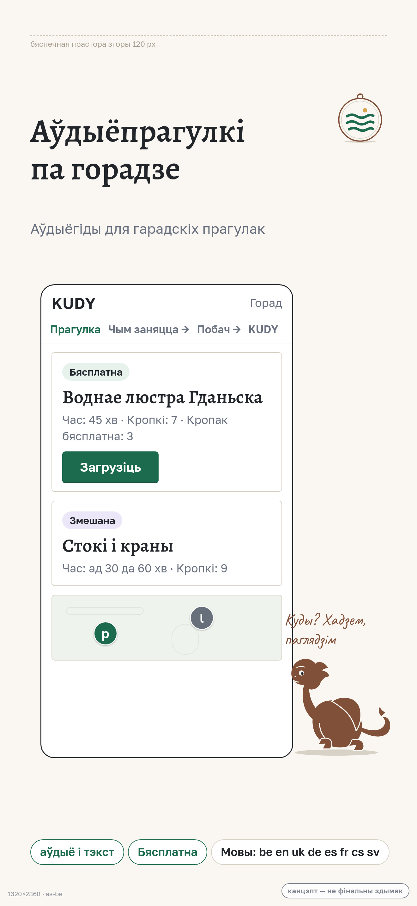
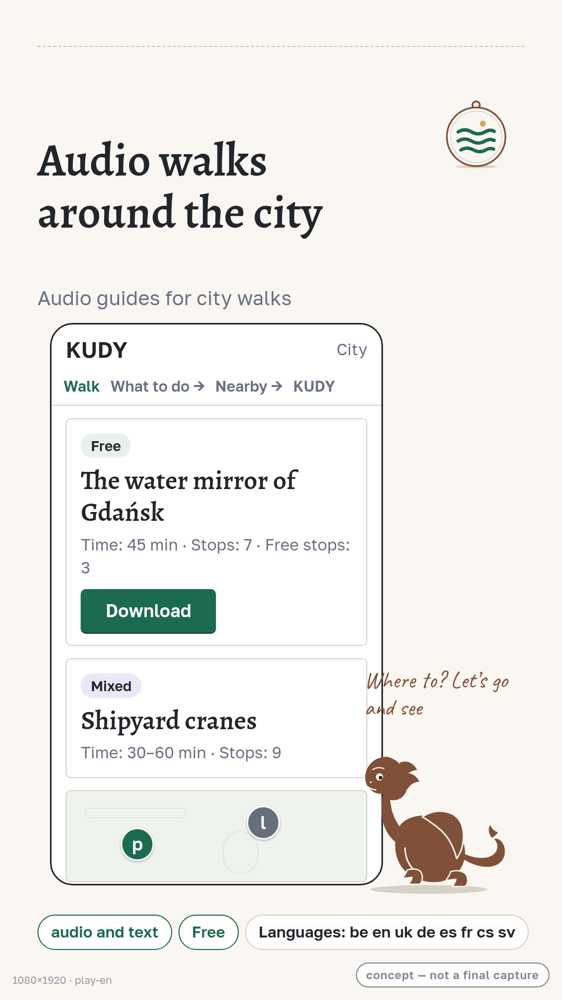
play-en · таксама store-appstore-en.png (1320×2868) — тая ж кампазіцыя.
Радкі ў прыладзе — даслоўна contracts/ui-messages/source.json (be) і translations/en.json (en); прэс-тэкст загалоўкаў, рэпліка дракона і назвы гідаў — аўтарскія (пазначаныя ў figcaption кожнага канва). Ніякіх абяцанняў узнагародаў; «Бясплатна»/«Змешана» — дзейныя пазнакі доступу.
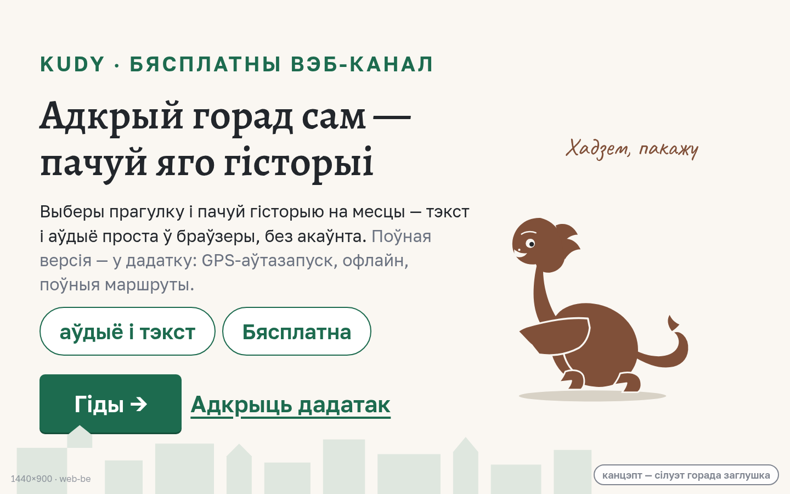
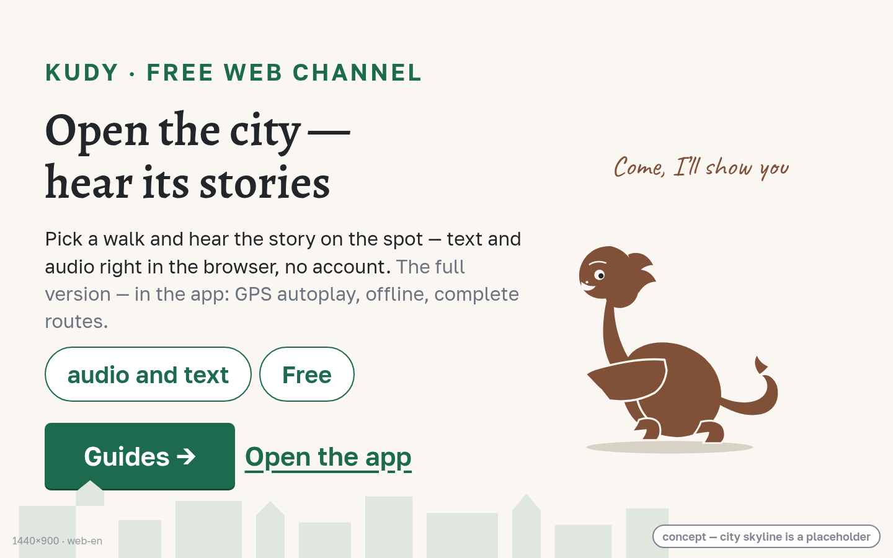
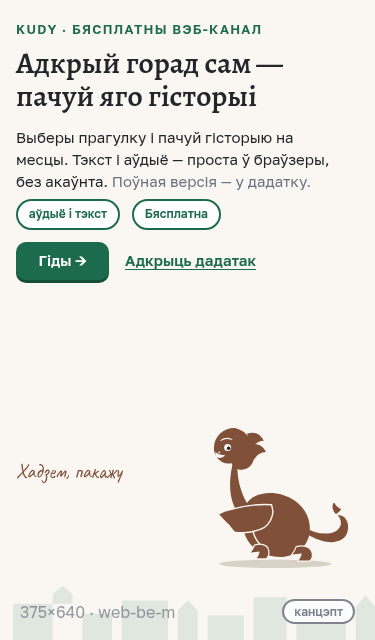
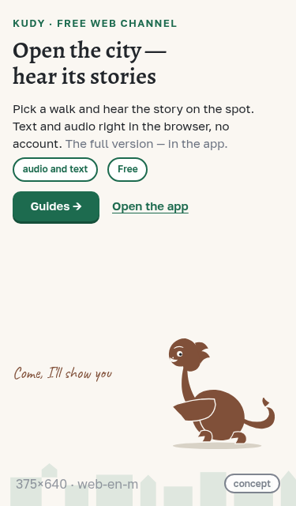
«Поўная версія — у дадатку: GPS-аўтазапуск, офлайн, поўныя маршруты.» — даслоўна web.ui.calmOfferText; чыпы — web.ui.audioAndText і native.chrome.access.free; тэза «без акаўнта» — з web.ui.privacyWeb. Сілуэт горада — заглушка: рэальная ілюстрацыя патрабуе асетаў з правамі (§7).
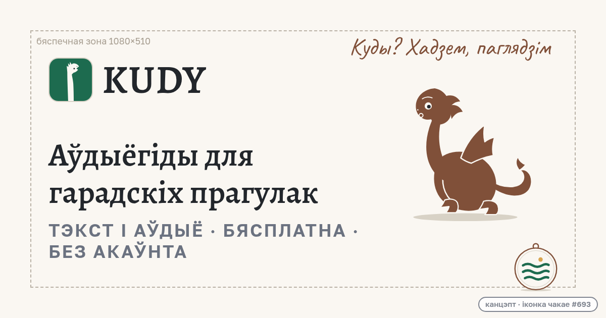
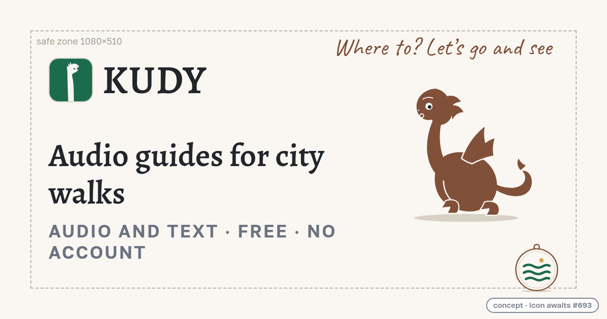
og:image — у social-card.html §2; абсалютызацыя адрасоў — толькі праз siteOrigin (web/lib/app-links.ts).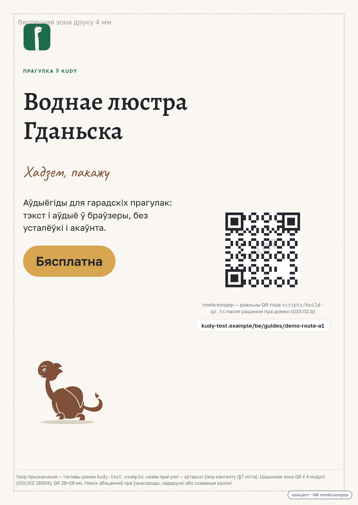
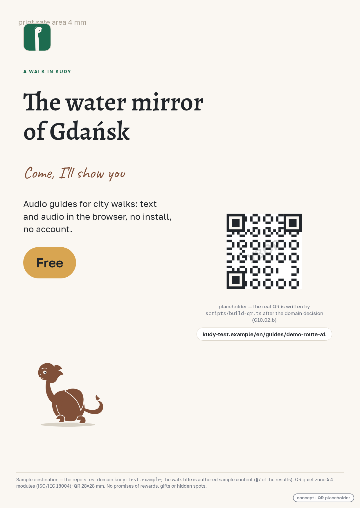
kudy-test.example/<локаль>/guides/demo-route-a1 — зарэзерваваны .example, той самы, што ў тэстах web/lib/qr.test.ts.scripts/build-qr.ts з app-links.siteOrigin пасля рашэння G10.02.b; да таго — толькі плейсхолдер (web/lib/qr.ts: выдуманы домен шлёа наведвальніка на чужы адрас).| Зона | be (зн / радкоў) | en (зн / радкоў) | Правіла зоны |
|---|---|---|---|
| Сторы-загаловак (88–104 px) | 24 / 2 — «Аўдыёпрагулкі па горадзе» | 27 / 2 — «Audio walks around the city» | ≤ 2 радкі; ≤ 14 зн на радок пры 88 px; даўжэйшая мова вызначае памер зоны |
| Сторы-подзагаловак | 32 / 1 — даслоўна web.ui.privacyIntro | 27 / 1 | 1 радок; калі пераносіцца — кароціць, не паменшваць кегль |
| Вэб-загаловак (76 px) | 37 / 2 — «Адкрый горад сам — пачуй яго гісторыі» | 32 / 2 — «Open the city — hear its stories» | ≤ 2 радкі ў шырыні 840 px; на вузкай шырыні — кароткая форма (гл. мабільны канва) |
| Вэб-копія (30 px) | 157 / 4 | 163 / 4 | ≤ 4 радкі на дэсктопе, ≤ 5 на мабільным; en трымае даслоўны calmOfferText |
| Чыпы | ≤ 2 чыпы на вэб-канве (3-і не лезе пры 840 px — вымерана); на сторах ≤ 3, кожны ≤ 29 зн | таго ж | чып = адзін факт; пералік моваў жыве на старонцы гіда (languagesLine), не ў чыпе |
| Рэпліка дракона (Caveat) | 23 / 2 — «Куды? Хадзем, паглядзім» | 26 / 2 — «Where to? Let's go and see» | яўны <br>; не шырэй 360 px на сторах; толькі рэплікі з брыфа ці аўтарскія з пазнакай |
| Назва прагулкі (QR-картка, 88 px) | 22 / 2 — «Воднае люстра Гданьска» | 26 / 2 — «The water mirror of Gdańsk» | ≤ 2 радкі ў шырыні 1040 px; узорны кантэнт — замяніць рэальным |
transform: scale тэксту — перапаўненне бачнае адразу пры рэндэры.| Асет | Крыніца | Правы і статус |
|---|---|---|
| Позы дракона («спакойны», «цікаўны», «кліча») | outputs/G25.03 (b79bfda) | лічбавы персанаж па фігурцы заснавальніка; уласнасць заснавальніка, выкарыстанне толькі ў матэрыялах KUDY (канон §6); падабенства фігурцы не пацверджанае — арыгінальныя фота адсутнічаюць (G24.02) |
| Медальён «Адлюстраванне» | outputs/G25.05 (#704) | прапанова хвалі G25; гіпотэза B08; умовы атрымання не зацверджаныя |
| Іконка-слот (напрамак I1) | outputs/G24.02 (#693) | напрамак A1/B2; фінальны асет і застаўка — пасля выбару ўладара ў #693; інтэграцыя — #429 |
| Шрыфты Golos Text, Alegreya, Caveat | outputs/G25.06/fonts | OFL 1.1, файлы ліцэнзій побач; self-host, знешняе падцягванне забароненае (канон §3) |
| Сілуэт горада (вэб-блок) | намаляваны ў гэтай задачы | заглушка; рэальная ілюстрацыя/фота патрабуе асета з правамі перад публікацыяй |
| QR-плейсхолдер | qr-placeholder.svg | дэтэрмінаваны ўзор з вадзяным знакам, нічога не закадавана; рэальны QR — scripts/build-qr.ts пасля G10.02.b |
| Радкі інтэрфейсу be/en | contracts/ui-messages/source.json, translations/en.json | скапіяваныя даслоўна з указанымі ідэнтыфікатарамі; правераныя на HEAD галіны |
| Назвы гідаў і гісторый («Воднае люстра Гданьска», «Стокі і краны», «Гданьскі кран») | аўтарскія ўзоры гэтай задачы | узорны кантэнт з пазнакай; перад публікацыяй замяняецца рэальным кантэнтам з праверанымі крыніцамі |
| Кантрасты прапанаваных колераў | вымерана ў гэтай задачы | clay #805039 на паперы 6.29:1; ink на бурштыне #D8A551 6.83:1; accent-ink на акцэнце 6.43:1; muted на паперы 4.52:1; clay на бурштыне 3.02:1 — не выкарыстоўваецца для тэксту |
| Тэма | Статус | Уладальнік рашэння |
|---|---|---|
| Фізічныя «скарбы дракона», размяшчэнне прадметаў у горадзе, раздача і кампаніі | адкладзена (B10); у картках-запрашэннях забаронена абяцаць | #695 (ацэнка пілота) → #696 (кантракты) → асобны брэйншторм |
| Сакрэтныя кропкі па кампасе | адкладзена (B10); кампас у шаблонах не з'яўляецца | #695/#696; месца кампаса ў іконцы — B05 у #693 |
| Публікацыя ў крамах і сацсетках, рэклама, QR-налепкі, падарункі | Out of scope картки #707 | G11.01 (#296) і ўладар |
Рэальны QR і og:image з жывым адрасам | чакае siteOrigin | G10.02.b (#320) |
| Фінальныя скрыншоты крам | робяцца з жывых зборак перад публікацыяй; гэтыя канвы — кампазіцыйныя шаблоны | рэліз-праверка #296 |